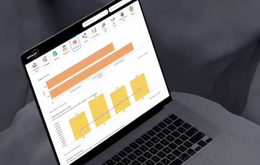
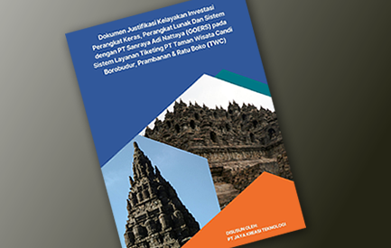
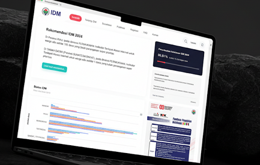
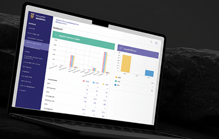
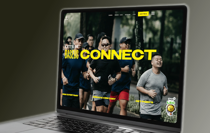
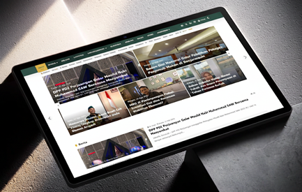
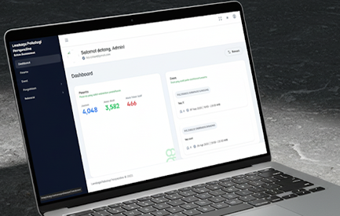
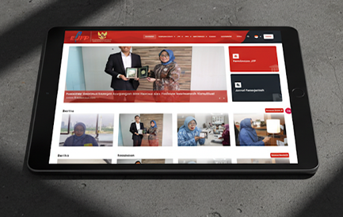
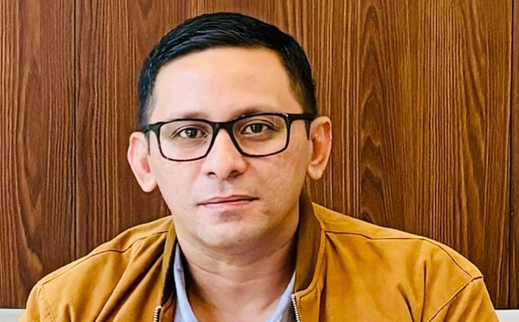

01
Mitra transformasi digital sejak 2019
Membangun sistem digital untuk pemerintah dan korporasi Indonesia.
JKreasi mendampingi kementerian, pemerintah daerah, dan korporasi merancang, membangun, dan mengoperasikan sistem digital: dari konsultasi, aplikasi web & mobile, hingga cloud dan managed service.
Sekretariat Kabinet RIKementerian Desa PDTTInJourney / TWCBaseusPemda
Dipercaya oleh instansi pemerintah dan korporasi

2019
Tahun berdiri, melayani sektor publik dan swasta
0+
Sistem digital yang telah dioperasikan
0
Tenaga ahli senior lintas disiplin
0%
Proyek dengan pendampingan pasca-implementasi
01 / Studi Kasus
Gulir untuk menelusuri · klik kartu untuk melompat








01/ 08
Ringkasan
Sistem persuratan dan sirkulasi dokumen di lingkungan instansi kepresidenan.
Tantangan
Rincian tantangan sedang dilengkapi bersama tim JKreasi.
Pendekatan
Rincian pendekatan sedang dilengkapi bersama tim JKreasi.
Hasil
Angka dampak sedang dilengkapi bersama tim JKreasi.
Ringkasan
Sistem ticketing destinasi wisata bervolume tinggi, dirancang agar tetap stabil pada musim liburan.
Tantangan
Rincian tantangan sedang dilengkapi bersama tim JKreasi.
Pendekatan
Rincian pendekatan sedang dilengkapi bersama tim JKreasi.
Hasil
Angka dampak sedang dilengkapi bersama tim JKreasi.
Ringkasan
Aplikasi pendukung operasional pengelolaan destinasi.
Tantangan
Rincian tantangan sedang dilengkapi bersama tim JKreasi.
Pendekatan
Rincian pendekatan sedang dilengkapi bersama tim JKreasi.
Hasil
Angka dampak sedang dilengkapi bersama tim JKreasi.
Ringkasan
Sistem manajemen kepegawaian daerah.
Tantangan
Rincian tantangan sedang dilengkapi bersama tim JKreasi.
Pendekatan
Rincian pendekatan sedang dilengkapi bersama tim JKreasi.
Hasil
Angka dampak sedang dilengkapi bersama tim JKreasi.
Ringkasan
Platform e-commerce brand global untuk pasar Indonesia.
Tantangan
Rincian tantangan sedang dilengkapi bersama tim JKreasi.
Pendekatan
Rincian pendekatan sedang dilengkapi bersama tim JKreasi.
Hasil
Angka dampak sedang dilengkapi bersama tim JKreasi.
Ringkasan
Portal berita dengan arsitektur headless CMS.
Tantangan
Rincian tantangan sedang dilengkapi bersama tim JKreasi.
Pendekatan
Rincian pendekatan sedang dilengkapi bersama tim JKreasi.
Hasil
Angka dampak sedang dilengkapi bersama tim JKreasi.
Ringkasan
Platform asesmen dan penilaian daring.
Tantangan
Rincian tantangan sedang dilengkapi bersama tim JKreasi.
Pendekatan
Rincian pendekatan sedang dilengkapi bersama tim JKreasi.
Hasil
Angka dampak sedang dilengkapi bersama tim JKreasi.
Ringkasan
Rincian sistem menyusul konfirmasi dari tim JKreasi.
Tantangan
Rincian tantangan sedang dilengkapi bersama tim JKreasi.
Pendekatan
Rincian pendekatan sedang dilengkapi bersama tim JKreasi.
Hasil
Angka dampak sedang dilengkapi bersama tim JKreasi.
02 / Masalah
Digitalisasi gagal bukan karena teknologinya kurang canggih.
-
01
Tidak dipakai
Sistem yang tidak dipakai pengguna.
-
02
Berhenti tumbuh
Aplikasi yang berhenti berkembang setelah vendor pergi.
-
03
Tumbang saat ramai
Infrastruktur yang tidak siap saat trafik melonjak di hari pertama layanan dibuka.
Masalahnya jarang pada teknologi, lebih sering pada perencanaan, desain pengalaman pengguna, dan dukungan setelah sistem berjalan.
JKreasi bekerja di tiga titik itu sekaligus.
Pilar 01
Konsultasi IT
Menerjemahkan kebutuhan organisasi menjadi peta jalan teknologi yang realistis dan dapat dianggarkan. Kami membantu menyusun kebutuhan, memilih arsitektur, dan menyiapkan dokumen teknis yang siap masuk proses pengadaan.
- Asesmen kondisi sistem dan infrastruktur saat ini
- Penyusunan roadmap dan blueprint transformasi digital
- Penyusunan kebutuhan teknis (KAK/TOR) dan estimasi anggaran
- Pendampingan tata kelola TI dan manajemen risiko
Pilar 02
Pengembangan Aplikasi
Aplikasi web dan mobile yang menggabungkan desain antarmuka intuitif dengan arsitektur modern, menghasilkan sistem yang andal, scalable, aman, dan nyaman digunakan.
- Aplikasi web berbasis framework modern, fokus pada performa
- Aplikasi mobile native maupun hybrid
- Arsitektur decoupled, microservices, event sourcing, headless CMS
- Integrasi pembayaran, ticketing, dan layanan pihak ketiga
Pilar 03
Desain UI/UX
Desain yang berangkat dari perilaku pengguna sebenarnya, bukan asumsi. Penting terutama untuk layanan publik yang penggunanya sangat beragam.
- Riset pengguna dan pemetaan alur layanan
- Wireframe, prototipe interaktif, dan uji kegunaan
- Design system yang konsisten dan mudah dikembangkan
- Penyelarasan dengan pedoman identitas visual instansi
Pilar 04
Cloud & DevOps
Mengotomatiskan siklus pengembangan, mengoptimalkan infrastruktur, dan memastikan sistem tetap andal saat beban puncak.
- Manajemen infrastruktur cloud AWS, GCP, dan Azure
- Pipeline CI/CD otomatis dan Infrastructure as Code (Terraform)
- Containerization dengan Docker dan Kubernetes
- Monitoring dan logging (Grafana, ELK)
- Arsitektur high availability dan skalabilitas
- Konsultasi DevSecOps: keamanan sejak baris kode pertama
Pilar 05
Managed Service & System Integration
Sistem tidak berhenti saat serah terima. Kami menjaga operasional, memantau performa, dan menghubungkan sistem baru dengan sistem yang sudah berjalan.
- Pemeliharaan, pemantauan, dan dukungan teknis berkelanjutan
- Integrasi antar-sistem dan API internal maupun eksternal
- Migrasi data dan modernisasi sistem lama
- Pelatihan dan alih pengetahuan untuk tim internal
Pilar 06
Belum yakin butuh yang mana?
Tidak masalah. Sebagian besar instansi datang dengan masalah, bukan dengan daftar layanan. Ceritakan situasinya. Kami bantu petakan kebutuhan, opsi arsitektur, dan estimasi cakupan sebelum Anda memutuskan apa pun.
03 / Layanan
Satu mitra untuk seluruh siklus hidup sistem digital Anda.
Lima pilar yang saling menyambung di sekitar satu pusat. Arahkan kursor ke tiap sel untuk melihat rinciannya.
Arahkan kursor atau klik sel · gunakan tombol panah untuk berpindah
04 / Pendekatan
Alasan instansi memilih kami.
Enam titik di mana cara kerja kami berbeda dari pola yang umum terjadi.
Yang sering terjadi
Cara kami bekerja
Yang sering terjadi
Proyek tersendat karena dokumen teknis dan pelaporan baru disesuaikan di tengah jalan.
Cara kami bekerja
Terbiasa dengan siklus anggaran dan pengadaan
Kami memahami siklus anggaran, dokumen pengadaan, dan standar pelaporan instansi pemerintah, sehingga proyek berjalan tanpa kejutan administratif.
Yang sering terjadi
Pekerjaan terbagi ke beberapa vendor, dan tanggung jawab saling dilempar begitu ada masalah.
Cara kami bekerja
Konsultan sampai DevOps di bawah satu atap
Konsultan, desainer, developer, dan DevOps engineer berada di tim yang sama. Tidak ada saling lempar tanggung jawab antar vendor.
Yang sering terjadi
Keamanan baru diperiksa menjelang rilis, terpisah dari proses pengembangan.
Cara kami bekerja
DevSecOps sejak awal, bukan tambalan di akhir
Praktik DevSecOps kami menempatkan keamanan di dalam proses pengembangan, bukan sebagai pemeriksaan di akhir.
Yang sering terjadi
Setelah serah terima, sistem berhenti dipantau dan berhenti berkembang.
Cara kami bekerja
Sistem tetap dijaga setelah proyek selesai
Managed service memastikan sistem tetap terpantau, diperbarui, dan berkembang setelah proyek dinyatakan selesai.
Yang sering terjadi
Menambah satu layanan berarti membangun ulang sebagian besar sistem.
Cara kami bekerja
Dibangun untuk diperluas, bukan diulang
Microservices, containerization, dan cloud membuat sistem dapat diperluas tanpa membangun ulang dari nol.
Yang sering terjadi
Tanpa dokumentasi dan pelatihan, instansi terus bergantung pada satu vendor.
Cara kami bekerja
Alih pengetahuan ke tim internal Anda
Dokumentasi dan pelatihan diserahkan bersama sistem, agar organisasi Anda tidak bergantung selamanya pada satu vendor.
05 / Proses
Cara kami bekerja.
Enam tahap yang membuat progres terlihat sejak awal, bukan hanya di akhir proyek.
-
01
Discovery
Memahami kebutuhan, pengguna, dan kendala teknis maupun regulasi.
-
02
Perancangan
Menyusun arsitektur, alur layanan, dan prototipe yang bisa diuji sejak dini.
-
03
Pengembangan
Iterasi bertahap dengan demo berkala, bukan hasil akhir yang baru terlihat di akhir proyek.
-
04
Pengujian & Keamanan
Uji fungsional, uji beban, dan pemeriksaan keamanan sebelum rilis.
-
05
Peluncuran
Deployment terkendali dengan pipeline otomatis dan rencana rollback.
-
06
Pendampingan
Pemantauan, pemeliharaan, dan pengembangan lanjutan.
06 / Tim
Tim Jkreasi.
Tenaga ahli senior yang menangani langsung proyek Anda, bukan tim yang berganti di tengah jalan.
-
01
DO

Dhachri Oskandar Director -
02
IM
 Ibnu Munandar
Lead Consultant
Ibnu Munandar
Lead Consultant
-
03
R
 Rizky
Project Manager
Rizky
Project Manager
-
04
AQ
 Ahmad Qorib
Senior Developer
Ahmad Qorib
Senior Developer
-
05
W
 Wardhana
Senior DevOps Engineer
Wardhana
Senior DevOps Engineer
-
06
AR
 Ahmad Rizal
Senior UI/UX Designer
Ahmad Rizal
Senior UI/UX Designer
07 / Tanya Jawab
Pertanyaan yang sering diajukan.
Hal-hal yang paling sering ditanyakan instansi sebelum memulai kerja sama.
Ya. Kami terbiasa bekerja dengan instansi pemerintah pusat dan daerah, termasuk penyusunan dokumen teknis dan pelaporan sesuai ketentuan.
Bergantung pada cakupan. Sistem berskala menengah umumnya 3–6 bulan sejak discovery hingga peluncuran, dengan demo berkala di setiap tahap.
Ya. Kode sumber, dokumentasi, dan hak atas sistem diserahkan kepada klien sesuai kesepakatan kontrak.
Kami menangani integrasi dan migrasi bertahap, sehingga layanan tetap berjalan selama proses modernisasi.
Ada. Managed service mencakup pemantauan, pemeliharaan, dan dukungan teknis dengan tingkat layanan yang disepakati.
Bisa. Alih pengetahuan dan pelatihan tim internal adalah bagian standar dari penyerahan proyek kami.
Masih ada yang ingin ditanyakan? Hubungi kami langsung
Mulai
Punya kebutuhan sistem yang belum menemukan bentuknya?
Ceritakan situasinya. Sesi konsultasi awal tanpa biaya. Kami bantu petakan kebutuhan, opsi arsitektur, dan estimasi cakupan sebelum Anda memutuskan apa pun.
08 / Kontak
Mari bicara kebutuhan Anda.
Ceritakan situasinya secara singkat. Tim kami akan menghubungi Anda dalam 1×24 jam kerja.